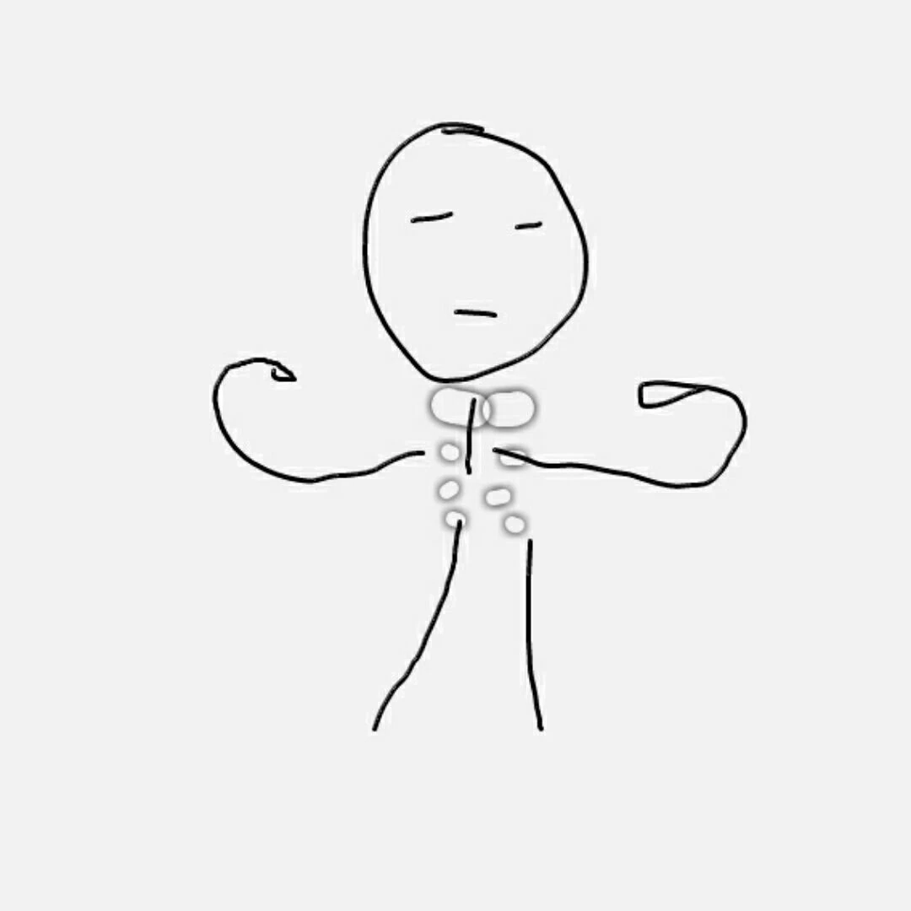

KASHIU.
任喆
·
在代码与诗歌之间
Press Space to Begin ↵
A name for what I have not yet become
Kashiu=杀死命运
KILL THE FATE — No curse, no fate.
Kashiu 不止是我的网名，也是我笔下的角色，寄托了我对未来的我的期望。
从前，我是一个宿命论的囚徒，我希望我能打破枷锁，去向远方。
— 在「环」里，他是都格拉斯的第二十二位君主，也是最后一位。
Identity
我是谁Who
2007 年降临地球，学习并模仿人类；对科技、文学、美术和未知都保持好奇。
Name任喆
AliasKashiu
Born2007.03.30 · 扶风
School陕西机电职业技术学院 · 软件技术
Home扶风 · 宝鸡 · 陕西
Focus打磨虚度的光阴，或者记录它
Days alive— 天
06 Stops
求学之路From 泰达 to 陕机电
天津 · 泰达
泰达二小义务教育的起点
扶风 · 杏林
杏林小学悲伤的经历
扶风 · 赵家
赵家小学美好回忆
扶风 · 县城
扶风县一中Play happily
扶风 · 美阳
美阳高中艰苦与难忘的朋友
宝鸡 · 陕机电
陕西机电职院当下
Worldbuilding · In Progress
我在造一个宇宙A world in progress
造物主将权柄弥散，万物孕育其中。
相同的规则落在不同角落，便有了「环」——一片由权柄冷凝而成的宇宙。
Star DomainsCivilizationDivinityCultivation · Magic
↑ 点击星图里的一颗星，看看里面有什么。
THE RING / STAR MAP
选择一片星域
点击一颗星，进入星域；再点击其中的星点，查看已经公开的部分。
SELECT A DOMAIN
SELECT A STAR
Fiction & Poetry
我写Both sides
小说Fiction
两个长篇，进行中
- 罗曼记长篇 · 15 章 · 未完结
- 仙诏六卷 350 章 · 大纲
- 环世界观设定 · 生长中
诗Poetry
《口水盆》· 42 首 · 2024 — 2026
月烛点思，春絮成灰，
染尽梦中霰。 《青玉案 · 黑月白日梦》· 2025
染尽梦中霰。 《青玉案 · 黑月白日梦》· 2025
Pixels & Paint
画Art，就是爆炸



Data of a curious life
侧写In Numbers
—天
持续记录日记
Since 2025.01.21
0
体验过的游戏
0h
TapTap 游戏时长
∞
保持好奇
Stay curious
观察 · 体验 · 思考
兴趣Curiosities
人工智能游戏宇宙
软件开发未来科技机械结构
去中心化国际象棋小说诗歌
音乐绘画汽车运动
互联网文明历史
番剧补完计划抽象（业余）
对地球、人类、动物、美食等领域，都保持广泛的兴趣。
Confidential · 别信
关于我All 18 personalities
这是我对自己的全部评价——别信。
风流倜傥英勇盖世智勇双全意气风发低调沉稳热情豪迈
沉静内敛敢闯敢拼知足常乐锋芒毕露收敛自持随性洒脱
认真严谨志在四方安于当下争强好胜淡泊名利开朗外向
My mental state
我的精神状态Unstable
杂种，你有什么资格与本王对话。
谢谢.
— 我愿意认识你，至于我们会成为怎样的朋友，可以交给时间。
任喆 · Kashiu
|
kashiu.douglas@gmail.com
完整个人站有空可以逛逛